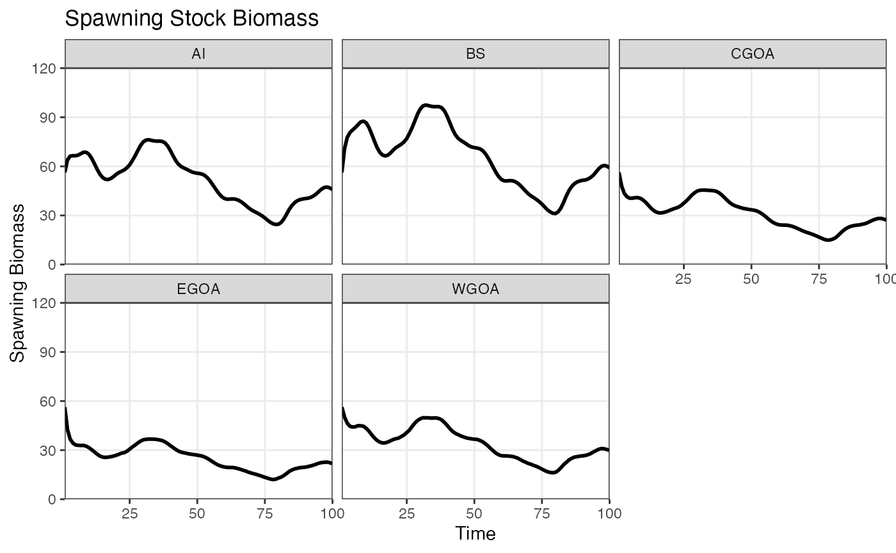
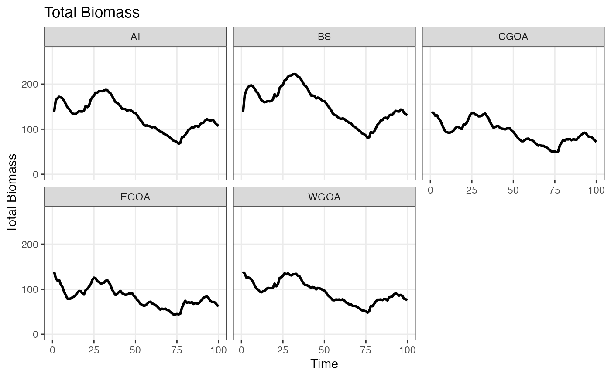

09_spatial_om_example.RmdHere we describe how to build a simple spatial model based on the demographic rates of Alaska sablefish. The example provided here is meant to illustrate how to set up the different components (demographic matrices, movement matrix, catch apportionment, etc.) of a spatially-explicit model, but is not designed to replicate any specific model outputs. Demographic parameters are derived from Goethel et al. (2021), while movement matrices are derived from Hanselman et al. (2018).
Start by specifying the model dimensions, dimension names, and obtaining default values for all model options:
library(afscOM)
nyears <- 100
nages <- 30
nsexes <- 2
nregions <- 5
nfleets <- 2
nsurveys <- 2
dimension_names <- list(
"time" = 1:nyears,
"age" = 2:31,
"sex" = c("F", "M"),
"region" = c("EGOA", "CGOA", "WGOA", "BS", "AI"),
"fleet" = c("Fixed", "Trawl")
)
model_params <- set_model_params(nyears, nages, nsexes, nregions, nfleets)Next, specify demographic parameters matrices (for more information see the vignette on “Specifying Demographic Parameters”).
In brief, the demographic parameters specified here define a population with constant natural mortality across time, age, sex, and region, age-specific maturity, and age-sex specific weight at age. Selectivity differs across age, sex, and fleet for both fisheries and surveys. Fishery retention is 1 across all ages and sexes, indicating that no discarding occurs.
assessment <- sablefish_assessment_data
# Mortality is constant across time, age, and region
M <- 0.113179
mort <- generate_param_matrix(M, dimension_names = dimension_names)
# 50-50 sex ratio across all times and regions
prop_males <- 0.5
sexrat <- generate_param_matrix(prop_males, dimension_names = dimension_names)
# Full retention for all fisheries
retention <- 1.0
ret <- generate_param_matrix(retention, dimension_names = dimension_names, include_fleet_dim = TRUE)
# No discard mortality as no discarding is allowed
discard <- 0.0
dmr <- generate_param_matrix(discard, dimension_names = dimension_names, include_fleet_dim = TRUE)
# Maturity varies by age
maturity <- assessment$growthmat[, "mage.block1"]
mat <- generate_param_matrix(maturity, dimension_names = dimension_names, by="age")
# Weight varies by age and sex
weight_mat <- matrix(NA, nrow=nages, ncol=nsexes, dimnames=dimension_names[c("age", "sex")])
weight_mat[,1] <- assessment$growthmat[, "wt.f.block1"]
weight_mat[,2] <- assessment$growthmat[, "wt.m.block1"]
waa <- generate_param_matrix(weight_mat, dimension_names = dimension_names, by=c("age", "sex"))
# Fishery and Survey selectivity vaies by age, sex, and fleet
selex_mat <- array(NA, dim=c(nages, nsexes, nfleets), dimnames=dimension_names[c("age", "sex", "fleet")])
selex_mat[,1,1] <- assessment$agesel[,"fish1sel.f"]
selex_mat[,2,1] <- assessment$agesel[,"fish1sel.m"]
selex_mat[,1,2] <- assessment$agesel[,"fish3sel.f"]
selex_mat[,2,2] <- assessment$agesel[,"fish3sel.m"]
sel <- generate_param_matrix(selex_mat, dimension_names = dimension_names, by=c("age", "sex", "fleet"), include_fleet_dim = TRUE)
survey_selex_mat <- array(NA, dim=c(nages, nsexes, 2), dimnames=dimension_names[c("age", "sex", "fleet")])
survey_selex_mat[,1,1] <- assessment$agesel[,"srv1sel.f"]
survey_selex_mat[,2,1] <- assessment$agesel[,"srv1sel.m"]
survey_selex_mat[,1,2] <- assessment$agesel[,"srv7sel.f"]
survey_selex_mat[,2,2] <- assessment$agesel[,"srv7sel.m"]
survey_sel <- generate_param_matrix(survey_selex_mat, dimension_names = dimension_names, by=c("age", "sex", "fleet"), include_fleet_dim = TRUE)Movement is defined based on estimates from Hanselman et al. (2018) that were derived from a long term tagging study. Movement is age and sex specific, but is not unique across all ages. Instead, ages are grouped together based loosely on the size of individuals at that age, and a unique movement matrix is defined for “small”, “medium”, and “large” fish (see Hanselman et al. 2018 for details). The rows of the movement matrix indicate the source region and the columns indicating the destination regions for individuals in each time step.
# Movement matrices from Hanselman et al. 2018
small_movement <- matrix(
c(
0.503, 0.294, 0.127, 0.021, 0.019,
0.372, 0.325, 0.180, 0.057, 0.053,
0.271, 0.304, 0.196, 0.112, 0.110,
0.070, 0.148, 0.172, 0.567, 0.042,
0.038, 0.085, 0.105, 0.049, 0.722
),
nrow=nregions, ncol=nregions, byrow=TRUE
)
small_movement <- t(apply(small_movement, 1, \(x) x/sum(x)))
medium_movement <- matrix(
c(
0.584, 0.261, 0.076, 0.014, 0.021,
0.369, 0.356, 0.139, 0.049, 0.075,
0.271, 0.339, 0.151, 0.091, 0.140,
0.081, 0.200, 0.151, 0.502, 0.065,
0.073, 0.183, 0.141, 0.054, 0.548
),
nrow=nregions, ncol=nregions, byrow=TRUE
)
medium_movement <- t(apply(medium_movement, 2, \(x) x/sum(x)))
large_movement <- matrix(
c(
0.550, 0.272, 0.094, 0.023, 0.024,
0.458, 0.306, 0.114, 0.050, 0.055,
0.423, 0.304, 0.117, 0.067, 0.076,
0.172, 0.227, 0.115, 0.395, 0.087,
0.153, 0.207, 0.106, 0.030, 0.501
),
nrow=nregions, ncol=nregions, byrow=TRUE
)
large_movement <- t(apply(large_movement, 2, \(x) x/sum(x)))
movement_matrix <- array(NA, dim=c(nregions, nregions, nyears, nages, nsexes))
movement_matrix[,,,1:3,] <- small_movement
movement_matrix[,,,4:6,] <- medium_movement
movement_matrix[,,,7:nages,] <- large_movementAll demographic matrices are added to a list object:
dem_params <- list(
waa=waa,
mat=mat,
mort=mort,
sexrat=sexrat,
sel=sel,
ret=ret,
dmr=dmr,
surv_sel=survey_sel,
movement=movement_matrix
)An initial numbers-at-age matrix is defined as is a timeseries of global recruitment. Global annual recruitment will be apportioned to individual regions equally (as is the default behavior).
init_naa <- array(NA, dim=c(1, nages, nsexes, nregions), dimnames = list(1, 2:31, c("F", "M"), c("EGOA", "CGOA", "WGOA", "BS", "AI")))
init_naa[,,1,] <- assessment$natage.female["1960",]/nregions
init_naa[,,2,] <- assessment$natage.male["1960",]/nregions
recruitment <- assessment$natage.female[,1]*2
recruitment <- as.matrix(sample(recruitment, size=nyears+1, replace=TRUE))An annual catch timeseries applicable to the entire model is defined
as a vector (20mt of catch each year). Separate matrices define the
proportion of the global catch that is apportioned to each spatial
region (dimension [nyears, nregions]), and the proportion
of each regional catch that is apportioned to each fishing fleet
(dimension [nyears, nfleets, nregions]). Here, catch is
divided equally amongst each spatial region, and fleet-specific catch is
allocated 80% to fleet 1 and 20% to fleet 2.
catch_timeseries <- matrix(rep(3, nyears), nrow=nyears)
regional_catch_aportionment <- matrix(1/nregions, nrow=nyears, ncol=nregions)
region_fleet_catch_apportionment <- array(NA, dim=c(nyears, nfleets, nregions))
region_fleet_catch_apportionment[,1,] <- 0.80
region_fleet_catch_apportionment[,2,] <- 0.20The apportionment matrices are added to the
model_options list:
model_options <- list(
removals_input = "catch",
simulate_observations = FALSE,
fleet_apportionment = region_fleet_catch_apportionment,
recruit_apportionment = NULL,
recruit_apportionment_random = FALSE,
do_recruits_move = FALSE
)Now, the model is projected forward with the following call:
om1 <- project(
init_naa = init_naa,
removals_timeseries = catch_timeseries,
recruitment = recruitment,
dem_params = dem_params,
nyears = nyears,
model_options = model_options
)
ssb <- afscOM::compute_ssb(om1$naa, dem_params)
bio <- afscOM::compute_bio(om1$naa, dem_params)
plot_ssb(ssb)
plot_bio(bio)